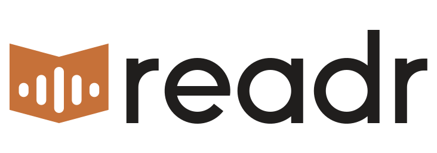
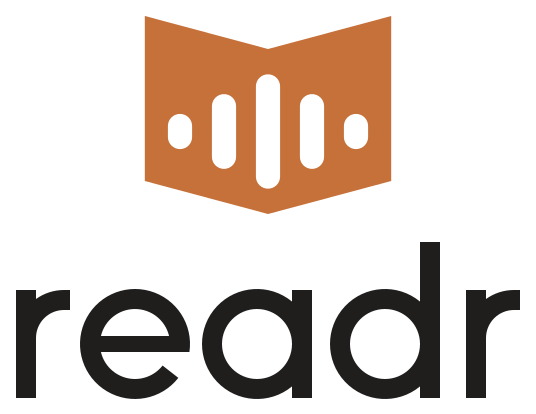
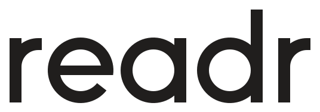

Readr logo guide
A solid open book with a soundwave punched through it: reading and listening in one shape.

Versions
Horizontal: the default

Stacked: square-ish spacesSymbol: icons and avatars

Wordmark: when the symbol is already nearbyClear space
Keep clear space equal to the height of the second bar (x) on every side. It scales with the logo.
Minimum size
| Version | Screen | Print (starting point, not print-tested) |
|---|---|---|
| Horizontal | 96 px wide | 25 mm wide |
| Symbol, five bars | 24 px | 8 mm |
| Small cut, three bars | 16 to 23 px only | Under 8 mm |
96 px
24 px
16 px small cut
Colour
| Name | HEX | RGB | CMYK (computed) | Use |
|---|---|---|---|---|
| Accent | #c67139 | 198 113 57 | 0 43 71 22 | Symbol, icon tiles |
| Ink | #201e1d | 32 30 29 | 0 6 9 87 | Wordmark, dark backgrounds |
| Paper | #f5ead8 | 245 234 216 | 0 4 12 4 | Light backgrounds, wordmark on dark |
| Deep | #8c491a | 140 73 26 | 0 48 81 45 | One-colour logo where accent is too light |
All four come from the app's existing tokens. Accent has 3.6:1 contrast on white and 3.0:1 on paper: fine for a logo, too low for small text. Use Deep (5.7:1 on paper) for text. CMYK is a math conversion, so proof it before printing.
Full colour on white
Full colour on paper

Reversed on ink
White on accentBlack, one colour
White, one colour
Type
The wordmark is custom-drawn, so always use the files instead of typing it. Alongside the logo, use the app's fonts: Figtree for text and Caprasimo for display.
Don't
- Stretch, rotate or redraw the logo, or change the bar count.
- Use colours outside the palette, or add gradients, shadows or outlines.
- Rearrange or resize the symbol and wordmark within a lockup.
- Use the three-bar small cut above 23 px.
- Use dark-ink artwork on dark backgrounds. The reversed and white files have opened-up geometry for that.
- Place it on busy images without a solid backing.
Files
| Folder | Contents |
|---|---|
svg/ | Symbol, horizontal, stacked, wordmark: full colour, reversed, black, white, accent, deep. Plus readr-symbol-small.svg |
png/ | Transparent PNGs of the main versions |
web/ | Favicons, Apple touch, PWA and maskable icons, manifest, head-snippet.html |
extension/ | Chrome extension icons at 16, 48 and 128 px |
board/ | Presentation with mockups (placeholder names and URLs are mockup text) |
generate.py | Regenerates the master SVGs |
Open items
- No trademark search has been done. Run one before public launch.
- Pantone not chosen. Match from a physical swatch before spot-colour printing.
- Not yet wired into the web app or extension.
- Not tested on vinyl cutters or embroidery. Have a vector editor check the files first.